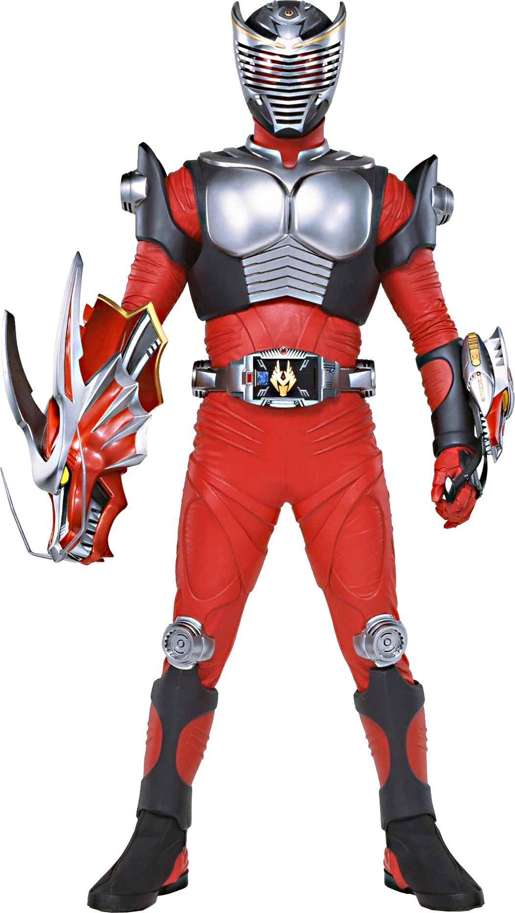

Kido Shinji is the main protagonist of Kamen Rider Ryuki. He is a journalist who participates in the Rider Fight as Kamen Rider Ryuki
hinji can transform into Ryuki's default form using his Card Deck and V Buckle upon forming a contract with Dragreder.
Rider Statistics[3]
Rider Height: 190 cm
Rider Weight: 90 kg
Rider Senses[3]
Eyesight: 15 Km
Hearing: 15 Km
Ability Parameters[3]
Punching Power: 10t (200 AP)
Kicking Power: 20 t (400 AP)
Resistance: 100 t (2000 GP) with Dragshield
Maximum Jump Height: 35 m
Maximum Running Speed: 100 m per 5 seconds
Survive form is Ryuki's final form, assumed by using the Survive Rekka Advent Card. The Survive Rekka card transforms the Dragvisor into the the Dragvisorzwei, which Ryuki uses to transform into Survive Form and read Advent Cards
Rider Statistics[2]
Rider Height: 195 cm
Rider Weight: 95 kg
Rider Senses[2]
Eyesight: 20 km
Hearing: 20 km
Ability Parameters[2]
Punching Power: 15 t (300 AP)
Resistance: 200 t (4000 GP) with Firewall
Kicking Power: 25 t (500 AP)
Maximum Jump Height: 45 m
Maximum Running Speed: 100 m per 4.5 seconds